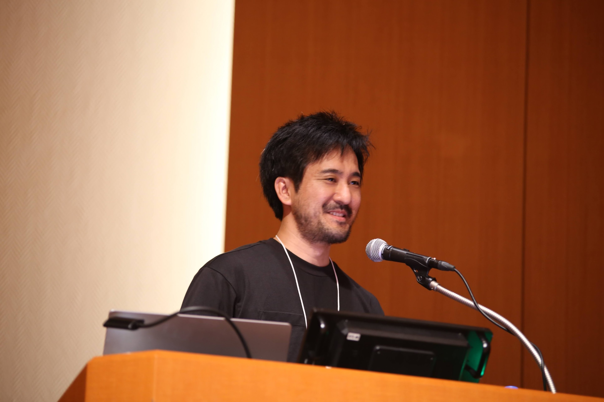

Naoto Usuyama
I'm a Principal Researcher at Microsoft Research.
I focus on creating AI models and systems for advancing humanity's health and productivity. I work on the key bottlenecks that stand in the way of progress — whether in modeling, data, infrastructure, or wherever they arise.
Born in Kamakura and Tokyo, Japan, now based near Seattle with my wife and daughter.